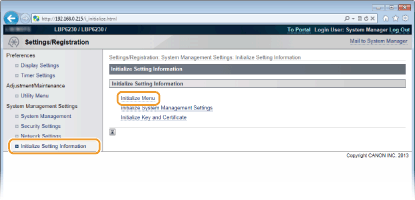
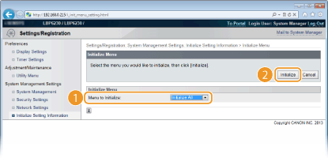

Initializing Preferences Settings
You can initialize the settings of the Remote UI [Preferences] menu (Setting Menu List) to return them to the factory default settings.
1
Start the Remote UI and log on in System Manager Mode. Starting the Remote UI
2
Click [Settings/Registration].

3
Click [Initialize Setting Information]  [Initialize Menu].
[Initialize Menu].

4
Select the settings to initialize, and then click [Initialize].

[Menu to Initialize]
Select the settings to initialize from the drop-down list. Select [Initialize All] to initialize both [Display Settings] and [Timer Settings].
Select the settings to initialize from the drop-down list. Select [Initialize All] to initialize both [Display Settings] and [Timer Settings].
5
Click [OK].